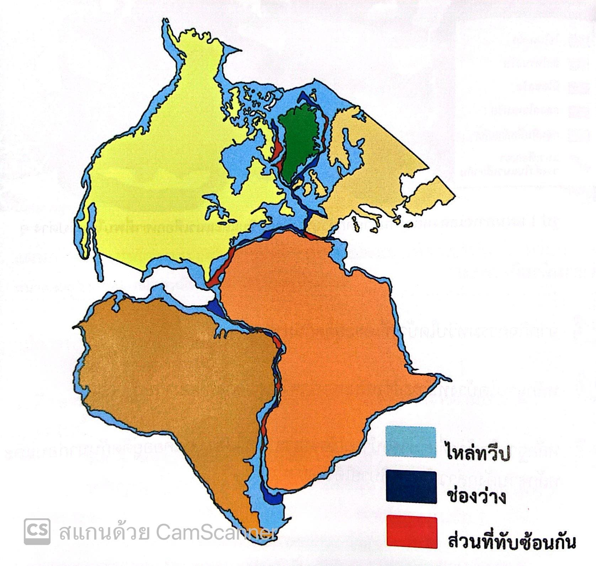

จุดประสงค์
1. อธิบายแนวคิด ทฤษฎีเกี่ยวกับการเคลื่อนที่ของแผ่นธรณี
2. อธิบายหลักฐานทางธรณีวิทยาที่สนับสนุนการเคลื่อนที่ของแผ่นธรณี
1. อธิบายแนวคิด ทฤษฎีเกี่ยวกับการเคลื่อนที่ของแผ่นธรณี
2. อธิบายหลักฐานทางธรณีวิทยาที่สนับสนุนการเคลื่อนที่ของแผ่นธรณี
โลกมีสมบัติทางกายภาพในแต่ละชั้นแตกต่างกัน ส่งผลให้โลกมีการเปลี่ยนแปลงอยู่ตลอดเวลา มนุษย์จึงต้องศึกษา และทำความเข้าใจกระบวนการเปลี่ยนแปลงของโลก โดยทฤษฎีที่ได้รับการยอมรับในปัจจุบันคือ ทฤษฎีธรณีแปรสัณฐาน ซึ่งอธิบายการเปลี่ยนแปลงของทวีปและมหาสมุทร โดยเชื่อว่า โลกเคยเป็นแผ่นดินเดียวกันมาก่อน หรือเรียกว่า พันเจีย (Pangaea) โดยแบ่งออกเป็นลอเรเซีย (Laurasia) และกอนด์วานา (Gondwana) ต่อมาเกิดการเลื่อนตัวของทวีป ส่งผลให้ทวีปต่างๆ เคลื่อนที่ออกจากกัน และเป็นทวีปดังเช่นในปัจจุบัน
อัลเฟรด เวเกเนอร์ (Alfred Wegener)
ได้ตั้งสมมติฐานว่าแผ่นดินทั้งหมดบนโลก เคยเป็นผืนแผ่นดินเดียวกันมาก่อน เรียกว่า พันเจีย เป็นภาษากรีก แปลว่า แผ่นดินทั้งหมด โดยมีพื้นที่ปกคลุมจากขั้วโลกเหนือถึงขั้วโลกใต้ ล้อมรอบด้วยมหาสมุทรพันทาลัสซา (Panthalassa) แบ่งทวีปเดียวกันนั้นเป็น 2 ส่วน
1. ลอเรเซีย คือ ส่วนเหนือเส้นศูนย์สูตร ประกอบด้วย ทวีปอเมริกาเหนือ กรีนแลนด์ และทวีปยูเรเซีย (ยกเว้นอินเดีย)
2. กอนด์วานา คือ ส่วนใต้เส้นศูนย์สูตร ประกอบด้วย ทวีปอเมริกาใต้ ทวีปแอฟริกา ทวีปแอนตาร์กติกา ทวีปออสเตรเลีย อนุทวีป อินเดีย และเกาะมาดากัสการ์
หลักฐานที่สนับสนุนทฤษฎีทวีปเลื่อน ได้แก่

1. การต่อกันได้ของทวีป แสดงว่าทวีปต่างๆ ในอดีต เคยเป็นทวีปขนาดใหญ่ทวีปเดียว ต่อมาเกิดการแยกตัว แต่ที่การเชื่อมต่อของทวีปต่างๆ ไม่สามารถเชื่อมต่อกันได้สมบูรณ์ เป็นเพราะการกัดเซาะชายฝั่ง และการสะสมตัวของตะกอน ทำให้รูปร่างของขอบทวีปเปลี่ยนไป
2. หลักฐานจากความคล้ายคลึงกันของกลุ่มหิน และแนวภูเขา กลุ่มหินที่พบในทวีปอเมริกาใต้ ทวีปแอนตาร์กติกา ทวีปแอฟริกา ทวีปออสเตรเลีย และอนุทวีปอินเดียว เกิดในสภาพแวดล้อมบนบกที่หนาวเย็น และมีการระเบิดของภูเขาไฟเหมือนกัน แสดงว่าทวีปเหล่านี้เคยอยู่ติดกันมาก่อน
3. หลักฐานจากหิน ที่เกิดจากการสะสมตัวของตะกอนจากธารน้ำแข็ง พบว่าแผ่นดินบริเวณกอนด์วานาถูกปกคลุมด้วยแผ่นน้ำแข็ง และทิศทางการเคลื่อนที่ของธารน้ำแข็ง สอดคล้องกับรอยครูดในหินที่พบในทวีปต่างๆ จึงสนับสนุนแนวคิดที่ว่าทวีปต่างๆ เคยต่อเป็นทวีปเดียวกัน
4. หลักฐานซากดึกดำบรรพ์ ค้นพบซากดึกดำบรรพ์ 4 ประเภทคือ มีโซซอรัส (สัตว์เลื้อยคลานน้ำจืด) ลีสโทรซอรัส (สัตว์เลื้อยคลานอาศัยอยู่บนบก) ไซโนกาทัส (สัตว์เลื้อยคลานอาศัยอยู่บนบก) และกลอสโซพเทรีส (พืชตระกูลเฟิร์น) ในทวีปต่างๆ เนื่องจากสิ่งมีชีวิตต่างๆ ที่พบ ไม่สามารถว่ายน้ำข้าม หรือใช้ลมพัดสปอร์เคลื่อนที่ได้ระยะทางไกล แต่กลับค้นพบซากดึกดำบรรพ์กระจายอยู่ในหลายทวีป จึงสนับสนุนว่าแต่ละทวีปเคยอยู่ติดกันมาก่อน
Licensed under the Creative Commons Attribution Share Alike License 4.0